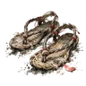
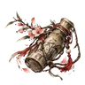

接着翻阅
Latest Articles
最新文章
新写下的两卷文字，
查看全部文章 →
AI 从零开始
展开课程目录
正在读取已发布课程……
最新视频
江湖驿站
常去的几处，先放在手边。
01视频平台
8 处 · 展开
视频平台
02AI 工具
7 处 · 展开
AI 工具
03AI 音视频创作
4 处 · 展开
AI 音视频创作

桃林签到到访足迹与江湖成就
今日到访
每日来桃林留下一枚脚印，连续签到可以解锁新的江湖称号。
正在查看你的江湖履历……

初入江湖完成首次签到尚未解锁 · 0 / 1 天

桃林常客连续签到 3 天尚未解锁 · 0 / 3 天
风雨故人累计签到 7 天尚未解锁 · 0 / 7 天